1.1 Webgunea
Azpiatalak
Fitxategiak, domeinuak, hiperestekak, URLak
Erabiltzaile batek webgune batera sartzea erabakitzen duenean, nabigatzaileari webgunearen helbidea
jakinarazten
dio. Nabigatzaileak zerbitzariari zuzentzen dio agindua eta hark informazioaren biltegian bilatzen du
eskatutakoa.
Behar dituen fitxategiak deskargatu eta edukia prozesatu ondoren erabiltzailearen pantailan erakusten du
eskatutakoa.
Webguneak sarbide publikokoak direnez eta Internet sare globala denez, fitxategi horiek beti egon ohi dira
eskuragarri. Horregatik, webguneak ez dira ordenagailu pertsonaletan gordetzen, baizik eta ordenagailu
espezializatuetan.
Webgune bateko fitxategiak eta informazioa Datu basea izeneko biltegi batean gordetzen
dira.
Tartean Zerbitzari izeneko ordenagailuak daude jasotako eskariari erantzuteko datuak
kudeatzeaz
arduratzen direnak. Hori eginda Bezeroa deitzen den erabiltzailearen ordenagailuari
bidaltzen
dio
erantzuna HTML dokumentu batean.
Zerbitzariak ordenagailu pertsonalen oso antzekoak dira, baina etengabe daude sarera konektatuta eta
erabiltzaileen eskaerei erantzutea ahalbidetzen dieten programak exekutatzen dituzte, noiz jasotzen diren
edo
nondik datozen kontuan hartu gabe.
Zerbitzarientzako programarik ezagunenak dira Apache, Linux sistemetarako, eta IIS (Internet Information
Server),
Microsoftek Windows sistemetarako sortua. Horiek arduratzen dira bezeroaren eta zerbitzariaren arteko
konexioa
ezartzeaz, erabiltzaileen sarbidea kontrolatzeaz, fitxategiak administratzeaz eta bezeroek eskatutako
dokumentuak
eta baliabideak bideratzeaz.
Fitxategiak
Webguneak dokumentu ugariz osatuta daude, eta nabigatzaileak dokumentu horiek deskargatzen ditu erabiltzaileak eskatzen dituenean. Webgune bat osatzen duten dokumentuak orri deitzen dira, eta orri berriak irekitzeko prozesuari nabigatzea (erabiltzaileak webgunearen orrialdeetan nabigatzen du).
Webgune bat garatzeko, fitxategi bat sortu behar dugu sartu nahi dugun orri bakoitzeko. Fitxategi horiekin batera, irudiak dituzten fitxategiak eta orri hauen barruan erakutsi nahi dugun beste edozein baliabide ere sartu behar ditugu (irudiak eta beste batzuk).
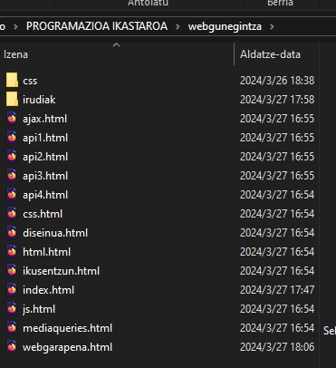
Horra hor webgune bateko direktorioak eta fitxategiak, zerbitzarira igotzen direnean.
Bertan irudiak eta css izeneko bi direktorio eta index.html eta .html luzapeneko hainbat fitxategi daude.
Direktorioak web orrietan erakutsi nahi ditugun irudiak eta beste baliabide batzuk gordetzeko sortu ziren, hala nola CSS eta JavaScript kodeak dituzten fitxategiak.
Bestalde, adibide honetako fitxategiek gune honetan sartu nahi ditugun hiru web orri irudikatzen dituzte.
index.html fitxategiak orri nagusiari dagokion kodea eta informazioa biltzen ditu (erabiltzaileak gure webgunera lehen aldiz sartzen denean ikusten duen orria).
Erabiltzaile bat gure webgunera lehen aldiz sartzen denean, nabigatzaileak index.html fitxategia deskargatzen du eta haren edukia erakusten du leihoan.
Erabiltzaileak gure webguneak eskainitako albisteak ikusteko ekintza bat egiten badu, esaterako ajax.html fitxategia eskatzen badu, nabigatzaileak fitxategia deskargatzen du zerbitzaritik, prozesatu eta index.html fitxategiaren edukia fitxategi berri honen edukiarekin ordezten du.
Erabiltzaileak beste web orri batera sartu nahi duen bakoitzean, nabigatzaileak dagokion fitxategia deskargatu behar du zerbitzaritik, prozesatu eta edukia pantailan erakutsi.
Webgune bateko fitxategiak eta ordenagailu pertsonal batean aurki ditzakegunak berdinak dira. Guztiek dute garatzaileak hautatutako izen bat eta edukia programatzeko erabilitako lengoaia islatzen duen luzapen bat (gure adibidean, fitxategiek .html luzapena dute, HTMLn programatu zirelako).
Fitxategi horiei nahi dugun edozein izen eman diezaiekegu, baldin eta hasierako orrialdea ez bada. Apache bezalako zerbitzariak fitxategi lehenetsiak izendatzen dituzte erabiltzaileak egiten ez badu. Sarrien erabiltzen den izena index da. Erabiltzaile bat zerbitzarian sartzen bada ireki nahi duen fitxategiaren izena zehaztu gabe, zerbitzariak index izena duen fitxategi bat bilatuko du eta bezeroari bidaliko dio bueltan. Horregatik, index.html fitxategia gure webgunearen sarrera-puntua da, eta beti sartu behar dugu.
GARRANTZITSUA: zerbitzariak malguak dira gure fitxategien izenari dagokionez, baina arau batzuk bete beharko genituzke. Ez erabili tarterik eta hitzak bereiztekotan, erabili beheko gidoia tartean (_). ?, %, #,/ bezalako karaktere bereziak saihestu, eta azenturik eta zenbakirik gabeko letra xeheak bakarrik erabili.
Oinarrizkoa: 'index' izen ohikoena bada ere, ez da fitxategiari lehenetsita esleitu diezaiokegun bakarra. Adibidez, gure dokumentuak HTMLn programatu beharrean PHP bezalako zerbitzari-lengoaia batean programatzen baditugu, index fitxategiari index.php izena esleitu behar diogu. Adibidez, Apachek index izena eta .html luzapena dituen fitxategi bat bilatzen du lehenik, baina aurkitzen ez badu, index izena eta .php luzapena dituen fitxategi bat bilatzen du.
Domeinuak eta URLak
Webguneak dokumentu ugariz osatuta daude, eta nabigatzaileak dokumentu horiek deskargatzen ditu erabiltzaileak eskatzen dituenean. Webgune bat osatzen duten dokumentuak orri deitzen dira, eta orri berriak irekitzeko prozesuari nabigatzea (erabiltzaileak webgunearen orrialdeetan nabigatzen du).
Webgune bat garatzeko, fitxategi bat sortu behar dugu sartu nahi dugun orri bakoitzeko. Fitxategi horiekin batera, irudiak dituzten fitxategiak eta orri hauen barruan erakutsi nahi dugun beste edozein baliabide ere sartu behar ditugu (irudiak eta beste batzuk).
Zerbitzariak IP (Internet Protocol) izeneko balio batekin identifikatzen dira. IP hau bakarra da ordenagailu bakoitzarentzat eta, beraz, ordenagailu bat sare baten barruan kokatzeko aukera ematen duen helbide gisa lan egiten du. Nabigatzaileak zerbitzari batera sartu behar duenean erabiltzaileak eskatutako dokumentua deskargatzeko, lehenik zerbitzaria bilatzen du IP helbide honen bidez, eta gero dokumentua bidaltzeko eskatzen dio.
IP helbideak 0 eta 255 arteko zenbaki osoek osatzen dituzte, puntu batez bereizita, edo zenbakiek eta letrek, bi puntuz bereizita, bertsioaren arabera (IPv4 edo IPv6). Adibidez, 216.58.198.100 helbidea Googleren webgunea ostatatuta dagoen zerbitzariari dagokio.
Balio horiek gogoratzeko zailak dira. Horregatik, Internetek zerbitzari bakoitza izen jakin batekin identifikatzen duen sistema bat erabiltzen du. Izen pertsonalizatu hauek, domeinu deituak, edonork gogora ditzakeen identifikatzaile errazak dira, google edo yahoo bezala, aipatzen duten webgunearen helburua zehazten duen luzapen batekin, .com (komertziala) edo .org (erakundea) bezala.
Erabiltzaileak www.google.com domeinuarekin webgunera sartzeko eskatzen dionean nabigatzaileari, lehenik eta behin DNS izeneko zerbitzari batean sartzen da nabigatzailea.
Zerbitzari horrek domeinu-zerrenda bat du, IP helbideekin. www.google.com domeinuari lotutako 216.58.198.100 IPa aurkitzen duenean, nabigatzaileari itzultzen dio, eta, ondoren, nabigatzailea IP horren bidez sartzen da Googlen webgunera.
Webguneetako IP helbideak beren domeinuekin lotuta daudenez, ez dugu zerbitzari baten helbidea gogoratu behar bertara sartzeko, domeinua gogoratu besterik ez dugu egin behar. Helbideari URL deitzen diogu eta hiru zati ditu:
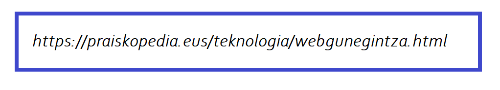
- Lehen zatia (https://) komunikazio-protokoloa irudikatzen duen karaktere-katea da.
- Bigarrena (praiskopedia.eus) webgunearen domeinua da.
- Azken osagaia (teknologia/webgunegintza.html) deskargatu nahi dugun baliabidearen izena da.
URLak, gure adibidean, nabigatzaileari eskatzen dio HTTP protokoloa erabil dezala teknologia
izeneko direktorioaren barruan dagoen webgunegintza.html fitxategia hartzeko eta ekartzeko.
Fitxategi hori praiskopedia.eus domeinuarekin identifikatutako zerbitzarian dago.
URLak dokumentu bakoitza webgunean kokatzeko erabiltzen dira eta, beraz, beharrezkoak dira webgunean nabigatzeko.
GARRANTZITSUA: zure webgunerako domeinua lortu ondoren, azpidomeinuak sor ditzakezu, zuzenean sartzeko direktorioan nabigatzailean URL hau idatzita: https://direktorioa/domeinua.
Oinarrizkoa: ordenagailuek hainbat protokolo erabiltzen dituzte elkarren artean komunikatzeko eta baliabideak eta datuak transferitzeko. HTTP (HyperText Transfer Protocol) web dokumentuetara sartzeko erabiltzen den komunikazio-protokoloa da. Praktikan ez da beharrezkoa idaztea, nabigatzaileek automatikoki egiten dutelako. Protokolo horren beste bertsio bat dago eskuragarri, HTTPS izenekoa. S letrak adierazten du konexioa enkriptatu egiten dela TLS edo SSL bezalako enkriptazio-protokoloen bidez. Informazio sentikorra erabiltzen duten webguneetan erabiltzea gomendatzen da.
Hiperestekak
Webguneak dokumentu ugariz osatuta daude, eta nabigatzaileak dokumentu horiek deskargatzen ditu erabiltzaileak eskatzen dituenean. Webgune bat osatzen duten dokumentuak orri deitzen dira, eta orri berriak irekitzeko prozesuari nabigatzea (erabiltzaileak webgunearen orrialdeetan nabigatzen du).
Webgune bat garatzeko, fitxategi bat sortu behar dugu sartu nahi dugun orri bakoitzeko. Fitxategi horiekin batera, irudiak dituzten fitxategiak eta orri hauen barruan erakutsi nahi dugun beste edozein baliabide ere sartu behar ditugu (irudiak eta beste batzuk).
Teorian, webgune bateko dokumentu guztietara sar gaitezke nabigatzailearen nabigazio-barran URLa idatzita. Metodo hau erabiliz webguneko fitxategi guztietara sartzea posible den arren, ez da praktikoa.
Lehenik eta behin, erabiltzaileek ez dituzte garatzaileak fitxategi bakoitzerako aukeratu zituen izenak ezagutzen eta, beraz, asma ditzaketen izenetara edo lehenetsita itzultzen duen orri nagusira mugatuko dira.
Bigarrenik, webguneak dozenaka edo milaka webgunez osatuta egon daitezke (zenbait gunek milioika dituzte) eta dokumentu gehienak aurkitzea ezinezkoa litzateke.
Soluzioak estekak dira hiperestekak ere deituak. Webgune bateko orrialdeen barruko dokumentuen erreferentziak dira. Esteka horiek sartuta, orrialde batek beste orrialde batzuen erreferentziak izan ditzake.
Erabiltzaileak saguarekin esteka batean klik egiten badu, nabigatzaileak erreferentzia horri jarraitzen dio eta erreferentziaren URLak adierazitako dokumentua pantailan deskargatzen eta erakusten da. Orrialdeen arteko konexio horiek direla eta, erabiltzaileek webgunean nabigatu ahal izango dute eta beren dokumentu guztietara sartu, beren esteketan klik eginez.
Oinarrizkoa: estekak dira fitxategi multzo bat webgune bihurtzen dutenak. Webgune bat sortzeko, orri bakoitzari dagozkion dokumentuak programatu behar dituzu, eta horietan sartu erabiltzaileak horietako bakoitzera sartzeko jarrai dezakeen ibilbide bat ezartzen duten estekak. Kapituluan gure dokumentuetan estekak nola txertatu aztertuko dugu.
URL absolutuak eta erlatiboak
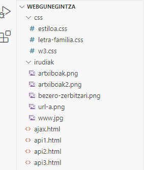
Hiperestekak nabigatzaileak prozesatzen ditu dokumentuetara sartzeko erabili aurretik. Horregatik, URL absolutuekin edo erlatiboekin defini daitezke.
URL absolutuak dira baliabidera sartzeko behar den informazio guztia dutenak (https://praiskopedia.eus/irudiak/artxiboak.png); aldiz, URL erlatiboak nabigatzaileak egungo URLari gehitu behar dion ibilbide-zatia bakarrik deklaratzen dutenak dira (irudiak/artxiboak.png).
Adibidez, 'irudiak' direktorioaren barruko irudi bat nahi izanez gero 'index.html' fitxategiak ipintzeko, (https://praiskopedia.eus/irudiak/artxiboak.png) URL absolutuarekin lor dezakegu, baina (irudiak/artxiboak.png) gisako URL erlatiboarekin ere bai.
Halakoetan nabigatzailea arduratzen da ibilbide horri tokiko URLa gehitzeaz eta irudia deskargatzeaz.
URL erlatiboek beheranzko ibilbideaz gain, hierarkiaren gorako bidea ere zehaztu dezakete.
Adibidez, (css) direktorio barruko fitxategi batetik (irudiak) direktorioaren barruan daukagun irudi bat eskuratzeko URL erlatibo bat erabil dezakegu, ibilbidearen hasieran bi puntu eta marra inklinatua jarriz (../) ibilbideak gorantz egin dezan (../irudiak/artxiboa.png).
Bi puntuek (..) nabigatzaileari adierazten diote sartu nahi dugun dokumentua egungo direktorioaren gaineko (aita) direktorioan dagoela.
1.2 Lengoaiak
Azpiatalak
Sarreran aipatu dugun bezala, HTML5ak hiru ezaugarri ditu (egitura, estiloa eta funtzionaltasuna), eta, beraz, hiru lengoaia independente integratzen ditu: HTML, CSS, eta JavaScript.
Lengoaia hauek nabigatzaileek dokumentuak prozesatzeko eta erabiltzaileari erakusteko interpreta ditzaketen jarraibideez osatuta daude. Gure dokumentuak sortzeko, hizkuntza horietan jasotako jarraibide guztiak ikasi behar ditugu, eta horiek nola antolatu jakin.
Bezeroaren aldeko lengoaiak
HTML -HyperText Markup Language-
HTML (HyperText Markup Language) parentesi angeluarrez inguratutako izenekin definitutako etiketa
multzo batez osatutako lengoaia da. Parentesi angeluarrek etiketa mugatzen dute eta izenak adierazten duen eduki mota definitzen. (<html>) etiketak adierazten du edukia HTML kodea dela. Etiketa batzuk banaka deklaratzen dira (<br> adibidez), etiketa bakarreko elementuak dira.
Beste batzuk irekiera- eta itxiera-etiketez. Itxierakoak izenaren aurrean alderantzizko barra bat darama. Hauei irekiera- eta itxiera-etiketadun elementu esaten zaie.
Banakako eta irekitze-etiketek atributuak izan ditzakete edukiei buruzko informazio gehigarria emateko (<html lang=”es”> ... </html> adibidez).
Etiketa bakarreko elementuak haien edukia aldatzeko zein kanpoko baliabideak sartzeko erabiltzen dira; irekiera- eta itxiera-etiketak dituzten elementuak, berriz, dokumentuaren edukia mugatzeko, beheko irudiak erakusten duen bezala.
Hainbat elementu konbinatu behar dira dokumentu bat definitzeko. Elementuak goitik beherako sekuentzian zerrendatzen dira, eta beste elementu batzuk izan ditzakete barruan.
Adibidez, goiko irudian agertzen den elementuak adierazten du bere edukia HTML kode gisa interpretatu behar dela.
Beraz, dokumentu horren edukia deskribatzen duten gainerako elementuak etiketen artean adierazi behar dira eta.
Era berean, elementuaren barruko elementuek beste elementu batzuk izan ditzakete.
Hurrengo adibideak HTML dokumentu erraz bat erakusten du, oinarrizko egitura bat definitzeko eta pantailan Kaixo guztioi! mezua erakusteko behar diren elementu guztiak biltzen dituena.
<!DOCTYPE html>
<html lang="es">
<head>
<title>Nire lehen HTML dokumentua</title>
</head>
<body>
<p>Kaixo guztioi!</p>
</body>
</html>
Horra hor kode erraz bat egitura konplexukoa. Lehenengo lerroan, dokumentua HTML5 motakoa dela adierazten duen etiketa bakarreko elementu bat dago (<!DOCTYPE html>).
Ondoren, irekitze-etiketa bat (<html lang="eus"> )bere atributuarekin, orriaren hizkuntza zein den adierazten duena. Honako honetan euskara.
Segidan bi elementu datoz bakoitza bere irekiera- eta itxiera-etiketekin. Burua <head></head> eta gorputza <body></body>.
Elementu horiek, aldi berean, elementu gehiago dituzte barnean, beren edukiekin <title>Nire lehen HTML dokumentua</title> buruan, eta <p>Kaixo guztioi!</p> gorputzean.
Oinarrizkoa: oro har, elementu oro bihur daiteke edukiontzi elementu batzuk barnean hartuz edo edukiontzi barneko elementu. Soilik egiturazkoak diren elementuak, hala nola, <html>, <head> eta <body> daukate leku espezifikoa HTML dokumentu batean, gainerakoak malguak dira nahierara koka daitezke.
Oinarrizkoa: atributuak irekiera-etiketaren (edo banakako etiketen) barruan deklaratzen dira beti, eta izena berdin balioa egitura bat izan dezakete (<html lang=”eus”></html>).
CSS Cascading Style Sheets
HTML elementuen estiloak definitzeko erabiltzen den lengoaia da, hala nola tamaina, kolorea, hondoa, ertza, etab. Nabigatzaile guztiek elementu gehienei estilo lehenetsiak esleitzen dizkieten arren, estilo horiek, oro har, gure webguneetarako nahi dugunetik urrun daude.
Estilo pertsonalizatuak adierazteko, CSSk propietateak eta balioak erabiltzen ditu. Eraikuntza honi deklarazioa deitzen zaio eta bere sintaxiak bi puntu ditu propietatearen izenaren ondoren, eta puntu bat eta koma bat amaieran linea ixteko.
Deklarazio horretan koloreari #FF0000 balioa esleitzen zaio. Propietate hori gero HTML elementu bati aplikatzen bazaio, elementu horren edukia gorriz agertuko da, #FF0000 balioak kolore gorria adierazten baitu.
CSS propietateak giltzak erabiliz taldeka daitezke. Propietate bat edo gehiago dituen talde bati erregela deitzen zaio eta erregela identifikatzen duenari hautatzaile.
body {
width: 100%;
margin: 0px;
background-color: #FF0000;
}
body hautatzaileari erregela hori aplikatuta honelako itxura hartuko du gure orriak:
- width:100%; Pantailaren zabalera osoa izango du.
- margin:0px; ez goian, ez behean, ez ezkerrean, ez eskuinean ez du izango marjinik.
- background-color:#FF0000; den dena gorria izango da.
Oinarrizkoa: HTML elementuei CSS estiloak aplikatzeko hainbat teknika daude. CSS propietateak aztertuko ditugu, eta HTML dokumentu batean nola sartu 3. eta 4. kapituluetan.
JavaScript
HTML eta CSS ez bezala, JavaScript programazio-lengoaia bat da.
Bidezkoak izateko, lengoaia horiek guztiak programazio-lengoaiatzat har daitezke, baina praktikan zenbait desberdintasun daude nabigatzaileari jarraibideak emateko moduan.
HTML nabigatzaileak informazioa antolatzeko interpretatzen duen adierazle-multzo bat bezala da; CSS nabigatzaileari dokumentua pantailan aurkezteko prestatzen laguntzen dioten estiloen zerrendatzat har daiteke (nahiz eta azken zehaztapenak lengoaia dinamikoagoa bihurtu zuen), baina JavaScript programazio-lengoaia bat da, C++ edo Java bezalako programazio profesionaleko beste edozein lengoaiarekin aldera daitekeena.
JavaScriptek besteek ez bezala, ekintza pertsonalizatuak egin ditzazke, hala nola, balioak biltegiratua, algoritmo konplexuak kalkulatu, dokumentuko elementuekin elkarreragin, eta horien edukia dinamikoki prozesatu.
HTML eta CSS bezala, JavaScript ere nabigatzaileetan sartzen da eta, beraz, gure dokumentu guztietan dago eskuragarri. Dokumentu baten barruan JavaScript kodea deklaratzeko, HTMLk <script> </script> elementua eskaintzen du.
<script>
function koloreaAldatu() {
document.body.style.backgroundColor = "#0000FF";
}
document.addEventListener("click", koloreaAldatu);
</script>
Kode horrek <body></body> elementuaren atzealdeko kolorea urdinera aldatzen du erabiltzaileak dokumentuan klik egiten duenean.
Oinarrizkoa: </script> elementuari esker JavaScript kodea kanpoko fitxategietatik ere kargatu dezakegu.
Zerbitzariaren aldeko lengoaiak
HTML, CSS eta JavaScripten programatutako kodeak erabiltzailearen ordenagailuan (bezeroa) exekutatzen ditu nabigatzaileak. Horrek esan nahi du, webguneko fitxategiak zerbitzarira igo ondoren, ezin direla aldatu ordenagailu pertsonal batean deskargatu eta haien kodeak nabigatzaileak exekutatzen dituen arte. Horrek webgune erabilgarri eta interaktiboak sortzea ahalbidetzen badu ere, une batzuetan informazioa zerbitzarian prozesatu behar dugu erabiltzaileari bidali aurretik.
Informazio horrek sortutako edukiari eduki dinamikoa esaten zaio, eta zerbitzarian exekutatutako eta helburu horrekin bereziki diseinatutako lengoaietan programatutako kodeek sortu izan dira (zerbitzariaren aldeko lengoaiak).
Nabigatzaileak kode mota hori duen fitxategi bat eskatzen duenean, zerbitzariak exekutatu egiten du, eta, ondoren, emaitza bidaltzen dio erabiltzaileari erantzun gisa. Kode horiek edukia eta dokumentuak denbora errealean sortzeko ez ezik, nabigatzaileak bidalitako informazioa prozesatzeko, erabiltzailearen datuak zerbitzarian gordetzeko, kontuak kontrolatzeko eta abarretarako ere erabiltzen dira.
Hainbat lengoaia daude zerbitzarietan kode exekutagarria sortzeko. Ezagunenak PHP, Ruby eta Python dira. Hurrengo adibidea PHPn idatzitako kode baten lagina da.
<?php
$nombre = $_GET['minombre'];
print('Su nombre es: '.$nombre);
?>
Kodeak nabigatzaileak bidalitako balio bat jasotzen du, memorian biltegiratzen du eta mezu bat sortzen du berarekin. Kode hori exekutatzen denean, azken mezuarekin dokumentu berri bat sortzen da, fitxategia bezeroari bidaltzen zaio berriro, eta, azkenik, nabigatzaileak edukia pantailan erakusten du.
GARRANTZITSUA: zerbitzari-lengoaiek beren teknologia erabiltzen dute, baina HTML5-ekin lan egiten dute erabiltzaileen kontuen erregistro bat eramateko, zerbitzarian informazioa gordetzeko, datu-baseak erabiltzeko, etab.
1.3 Lanabesak
Azpiatalak
Webgune bat sortzeko hainbat urrats eman behar ditugu. Dokumentuak HTMLn programatu behar ditugu, fitxategiak CSS estiloekin eta kodeekin sortu behar ditugu JavaScript-en, gunea erabiltzaileei ikusgai egingo dien zerbitzaria konfiguratu behar dugu eta fitxategi guztiak gure ordenagailutik zerbitzarira transferitu behar ditugu.
Zorionez, tresna asko daude erabilgarri zeregin horietan laguntzeko. Tresna hauek oso erabilerrazak dira eta gehienak doan eskaintzen dira.
Web domeinua/Web ostatua/FTP ,
Web domeinua
Gure webgunea jendaurrean aurkezteko prest dagoenean, nabigazio-barran erabiltzaileek idatziko duten domeinua erregistratu behar dugu bertara sartzeko. Haren izena nahi duguna izan daiteke, eta hainbat aukera ditugu hedapena definitzeko, helburu komertzialak dituzten hedapenetatik (.com edo .biz., adibidez) irabazi asmorik ez dutenetara edo pertsonaletara (.org, .net edo .info, adibidez), edota webgunearen kokapena zehazteko balio gehigarria duten eskualdeko hedapenak, hala nola .co.uk Erresuma Batuko webguneetarako edo .eu Europar Batasunarekin lotutako webguneetarako.
Gure webgunerako domeinu bat erosteko, erregistratzaile batekin kontu bat ireki behar dugu. Domeinu gehienek urteko muga-zerga bat ordaindu behar dute, baina prozesua nahiko erraza da, gure domeinuari emango diogun izena eta hedadura erabakitakoan, bilaketa bat egin, aukeratu dugun izena ez dela erabiltzen ari eta eskuragarri dagoela ziurtatzeko, eta, gero, eskaera egin.
Domeinua erregistratuta dagoenean, sistemak domeinuarekin lotu nahi ditugun zerbitzarien izenak (nameservers) eskatzen dizkigu. Izen horiek domeinu eta aurrizki batez osatutako testu-kateak dira, normalean NS1 eta NS2, gure webgunearen kokapena zehazten dutenak (zerbitzari edo nameservers izenak gure webgunea gordetzen den zerbitzariak ematen ditu). Oraindik izen horiek ez baditugu, konpainiak eskaintzen dituenak erabil ditzakegu eta aurrerago aldatu.
GARRANTZITSUA: zure domeinua erregistratzen duen konpainiak zerbitzari izenak esleitzen ditu lehenetsita, eta haiek behin-behineko gordeleku gisa erabiltzen dituzte (aparkaleku ere esaten zaio). Hasiera batean, izen horiek esleitu eta aurrerago alda ditzakezu zure zerbitzaria prest dagoenean. Konpainia batzuek domeinuaren erregistroa eskaintzen dute zerbitzarien alokairuarekin batera, eta, erabiltzen baditugu.
Web ostatua
Zerbitzari bat konfiguratzeak eta mantentzeak garatzaile guztiek ez dituzten ezagutzak eskatzen ditu. Hori dela eta, web ostatua (web hosting) izeneko zerbitzua eskaintzen duten konpainiak daude. Zerbitzu horri esker, edozein pertsonak konfiguratutako zerbitzari bat alokatu dezake, webgune bat edo asko gordetzeko prest dagoena.
Web ostatu-mota bat baino gehiago daude eskuragarri, hala nola, hainbat webgunek zerbitzari beretik (ostatu partekatua) jardutea ahalbidetzen dutenak, webgune bakar baterako zerbitzari oso bat gordetzen duten zerbitzu profesionalagoak (ostatu dedikatua), edo zerbitzari askotan (hodeiko ostatua) webgune zabal bat banatzen dutenak, tarteko hainbat aukera barne.
Web ostatu-kontu bat edukitzearen abantaila nagusia da denek eskaintzen dutela kontrol-panel bat gure webgunea sortzeko eta konfiguratzeko aukerekin. Honako hauek dira zerbitzu horietako gehienetan aurkituko ditugun aukerarik ohikoenak.
- File Manager web-tresna bat da, gure webguneko fitxategiak administratzeko. Tresna honen bidez, nabigatzailetik igo, jaitsi, editatu edo ezabatu ditzakegu fitxategiak zerbitzarian.
- FTP Accounts-ek zerbitzariarekin FTP (File Transfer Protocol) bidez konektatzeko erabiltzen ditugun kontuak administratzeko aukera ematen digun zerbitzua da.
- MySQL Databases gure webgunerako datu-baseak sortzeko aukera ematen digun zerbitzu bat da.
- phpMyAdmin PHPn programatutako aplikazio bat da, gure datu-baseak administratzeko.
- Email Accounts gure webgunearen domeinuarekin posta elektronikoko kontuak sortzeko aukera ematen digun zerbitzua da (adibidez, info@midominio.com).
Merkatuko kontrol panelik ezagunena cPanel da.
Ostatu-kontu bat ireki ondoren, konpainiak mezu elektroniko bat bidaltzen digu kontrol-panelera sartzeko eta zerbitzaria konfiguratzeko behar dugun informazioarekin. Konpainiaren sistemak, oro har, behar ditugun narrizko kontu guztiak sortzen ditu, FTP kontu bat barne, fitxategiak igotzeko.
Oinarrizkoa: ordainpeko ostatu-kontuez gain, praktikatzeko erabil dezakegun doako ostatua dago, baina zerbitzu horiek propaganda barne hartzen dute edo webgune profesionalak garatzea eragozten duten murrizketak ezartzen dituzte.Beti gomendatzen da hilean 5 dolar inguruko kostua izan dezakeen ostatu partekatuko kontu batekin hastea, ostatu profesionaleko zerbitzu batek nola lan egiten duen ikasteko eta eskaintzen dituen aukera guztiak aztertzeko. Hainbat konpainiak ostatu-mota hori sartzen dute beren zerbitzuetan.
FTP programak
Aipatu berri dugun bezala, ostatu-kontuek nabigatzailetik webguneko fitxategiak administratzeko zerbitzua eskaintzen dute. Web orri honetara kontrol-paneletik sar gaitezke, zerbitzarian fitxategiak igo, jaitsi eta editatzeko.
Tresna erabilgarria da, baina soilik praktikoa aldaketa txikiak egin behar ditugunean edo fitxategi gutxi batzuk igo behar ditugunean.
Tresnak nabigatzaileetan integratuta dagoen sistema bat aprobetxatzen du, eta FTP (File Transfer Protocol) izeneko protokolo batekin lan egiten du fitxategiak ordenagailu batetik bestera transferitzeko sare batean.
Nabigatzaileek sistema hau erabiltzen dute erabiltzaileei fitxategiak deskargatzeko aukera emateko behar dutelako, baina helburu nagusia webguneak pantailan deskargatzea eta erakustea denez, esperientzia txarra eskaintzen dute fitxategi horiek manipulatzeko orduan. Horregatik, garatzaile profesionalek ez dute nabigatzailea erabiltzen, FTP protokoloa erabiliz bezero baten eta zerbitzari baten artean fitxategiak transferitzeko berariaz diseinatutako programak baizik.
Merkatuak hainbat FTP programak eskaintzen ditu, ordainpeko eta doako bertsioak barne. Doako programarik ezagunenak Filezilla du izena eta www.filezilla-project.org helbidean dago eskuragarri. Programa honek hainbat panel eskaintzen ditu konexioari eta parte hartzen duten ordenagailuei buruzko informazioarekin, bi panel barne, bata bestearen ondoan, panel batetik bestera arrastaka eramate hutsarekin ordenagailuen artean transferitu ditzakegun artxibo lokal eta urrunen zerrendarekin.
Ostatu-kontu bat irekitzen dugunean, sistemak automatikoki sortzen du FTP kontu bat gure webgunerako, protokolo hau erabiliz zerbitzariarekin bat egin dezakegu (sistemak kontu hori konfiguratzen ez badu, guk geuk egin dezakegu, kontrol-paneleko FTP Accounts aukeratik).
Konexioa egiteko behar ditugun balioak hauek dira:
- Ostalaria (host) (IP edo domeinua),
- Erabiltzailearen izena
- Gakoa edo pasahitza
- Zerbitzariarekin FTP bidez konektatzeko ostalariak esleitutako ataka
Filezillak informazio hori txertatzeko bi modu eskaintzen ditu:
- Barra bat goiko aldean konexio azkar bat egiteko
- Botoi bat maiz erabiltzen diren hainbat konexio gordetzeko
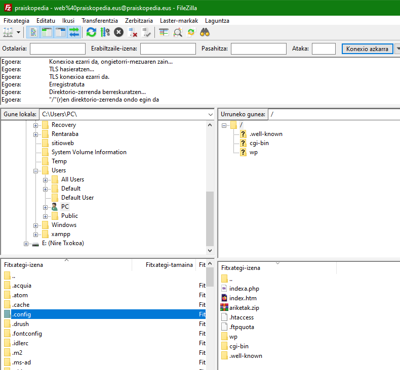
Biltegiratzeko edo aurretiazko konexioetara sartzeko botoia sakatuz gero (1. zenbakia), Filezillak leiho bat irekiko du, eta, bertan, eskuragarri dauden konexioen zerrenda administratu eta konfigurazio-aukera gehigarriak zehaztu ahal izango ditugu.
Leihoak konexio bat sortu, berrizendatu eta ezabatzeko botoiak (New Site, Rename, Delete), erabili nahi dugun protokoloa aukeratu ahal izateko eremuak (FTP konexio normal baterako eta SFTP konexio seguru baterako), fitxategiak transferitzeko erabilitako enkriptazio modua eta eskatutako kontu mota (Anonymous konexio anonimoetarako edo Normala erabiltzailea eta gakoa behar duten konexioetarako).
Programak konfigurazio aurreratuago baterako panel gehigarriak ere baditu, irudiak erakusten duen bezala.
Egoera normal batean, konexioa ezartzeko, ostatua txertatu behar dugu (gure webguneko IPa edo domeinua), kontu mota hautatu Normal gisa, erabiltzaile-izena eta pasahitza sartu, eta gainerako balioak lehenetsita utzi.
Ordenagailuak konektatzen direnean, Filezillak fitxategien zerrenda erakusten du pantailan. Ezkerrean fitxategiak gure ordenagailuan hautatutako direktorioan daude (gure disko gogorrean nahi dugun edozein direktorio hauta dezakegu), eta eskuinean gure ostatu-kontuaren erroko direktorioan dauden fitxategiak eta direktorioak daude, irudiak erakusten duen bezala.
Ostatu-kontu bat sortzen denean, sistemak hainbat direktorio eta fitxategi ditu, zerbitzuak eskatutako informazioa gordetzeko (emailak biltegiratzea, erabiltzaileen jardueraren jarraipena egitea, etab.).
Gure webguneko fitxategiak gordetzeko direktorioa public_html da. Direktorio hau irekitzen denean, gure fitxategiak igotzen has gaitezke ezkerreko paneletik eskuineko panelera arrastatuz (ikus goiko irudia).
HTML dokumentu bat irekitzeko nabigatzailea izatea nahikoa da.
Oro har, frontend lengoaia bakarrik duen web-orri bat sortzen badugu, adibidez, HTML, CSS eta Javascript soilik erabiliz eraikitako web-orri bat, nabigatzailea bera gai izaten da behar bezala interpretatzeko, eta, beraz, ez dugu zerbitzari gehigarririk izan behar sisteman.
Egin dezagun froga bat
GARRANTZITSUA: Nabigatzailearen fitxan, goiko aldean, erlaitzean, 'Lehen Agurra' ipintzen du, <title>eta </title> etiketekin guk agindu bezala, eta gorputzean 'KAIXO GUZTIOI! ONGI AL ZAUDETE? jartzen du paragrafo etiketen artean <p> eta </p>etiketen artean, 'KAIXO GUZTIOI! ONGI AL ZAUDETE?', komatxo artean jarriz agindu diogun bezala.
Eta hori guztia gure nabigatzailean dago, web-orri arrunt bat bezala. Proba dezakezue beste nabigatzaileren batekin, emaitza berdintsua lortuko duzue.
Oinarrizkoa: nabigatzailean fitxategi bat irekitzeko bi modu:
- Saguaren eskuin botoiaz klik fitxategiaren gainean eta Ireki honekin/[nabigatzailea]hautatu
- Fitxategian klik bikoitza egin saguaren ezker botoiaz eta sistema arduratzen da nabigatzailea irekitzeaz eta dokumentua kargatzeaz.
Horratx gure lehen web-orria!. Animo! hurrengo ataletan gehiago.
Hala ere, backend lengoaiak erabili behar baditugu, adibidez, PHP, beharrezkoak diren zerbitzariak instalatu behar ditugu gure ordenagailuan (edo zerbitzarian), horiek lengoaia interpretatzeko gai izan daitezen eta azken emaitza nabigatzailearen bidez ikusteko aukera izan dezagun. Nabigatzaileak, zerbitzari hori gabe, ez luke interpretatuko nabigatzailea.
GARRANTZITSUA: Tokiko web zerbitzari gisa ezagutzen da erreferentziazko ekipoari berari sare lokal batean gordetako web zerbitzari hori. Horrela, tokiko web zerbitzaria sare lokal bat osatzen duten ekipoetako edozeinetan instalatu daiteke. Instalazioa software baten bidez egiten da, eta software horrek aukera ematen du web orrian probatzeko eta nabigatzeko.
Tokiko zerbitzariak hainbat abantaila eskaintzen ditu, eta interesgarria da horiek ezagutzea.
- Lehenik eta behin, aukera ematen du webgunean mota guztietako probak egiteko, hondatzeko beldurrik gabe, eta hori onura handia da erabiltzaileei esperientziarik onena emateko
- Bigarrenik, ez da beharrezkoa domeinu bat kontratatzea 127.0.0.1 baita, eta disko gogorrak hosting funtzioak betetzen ditu.
- Eta, hirugarrenik, aurreko puntuekin zuzenean lotuta, Interneteko webguneaz gain, tokiko zerbitzarian ere eduki daiteke biltegiratuta, euskarri gisa.
Beraz, gaur egun enpresek asko erabiltzen duten baliabidea da. Izan ere, modu azkar eta errazean zuzendu ditzakete akats horiek guztiak, baita egoki iritzitako aldaketak egin ere, webgune korporatiboan, urruneko behin betiko zerbitzarira igotzeko prest daudela erabat ziur egon arte.
XAMPP
Aurrerago ikusiko dugun bezala, JavaScript kode batzuk zerbitzari batetik deskargatzen direnean bakarrik lan egiten dute, eta zerbitzari teknologiak PHP bezala zerbitzari batean ostatatzea eskatzen dute funtzionatzeko.
Zer da Localhost?
Termino sinpleetan, funtsean pentsa dezakezu localhost ordenagailua bezala». Gogoan izan "ordenagailu hau" programari aplikatzen zaiola, eta ez fisikoki erabiltzen ari den ordenagailuari.
Maila teknikoagoan, localhost normalean IP 127.0.0.1 helbidean ebazten da, hau da, loopback helbidean. Bere garrantzia dela eta, "localhost" terminoa domeinu-izen erreserbatua da. Horrek esan nahi du, nahasketak saihesteko, ezinezkoa dela domeinu-izen bat «localhost» duena domeinu-izenaren lehen edo bigarren mailan erregistratzea.
Dokumentu mota horiekin lan egiteko, bi aukera daude:
- Web-ostatuko kontu bat eskuratu eta probak egiteko erabili
- Gure ordenagailuan zerbitzari bat instalatu
Garatzaile askok bigarren aukera baiatuta «proba lokaleko ingurunea» izeneko zerbait sortzen dute webguneak eraikitzeko. Funtsean, ingurune horrek zuzeneko webgune bat imitatzen du, baina guztiz independentea da erabiltzailearen ordenagailuan.
Gunea localhosten bakarrik existitzen denez, erraza da garatzaileentzat probak egitea ingurune horretan, benetako webgune batean zerbait apurtzeko beldurrik gabe. Gunea osaturik eta baliozkotuta dagoenean, garatzaileek beren localhost inguruneko webgunea benetako zerbitzari-ingurune batera mugi dezakete eta argitaratzeko.
Hona hemen hainbat zerbitzari lokal:
Ikastaro honetan XAMPP erabiliko dugu, batik bat sistema eragile guztietan instala daitekeelako.
Zer da XAMPP?
XAMPP Apacheren banaketa bat da, hainbat software libre barne hartzen dituena.
- X-k Linux, Windows eta Mac OS X sistema eragileak irudikatzen ditu.
- A-k Apache web zerbitzariari egiten dio erreferentzia. Zerbitzari hori kode irekikoa da, eta Apache Software Foundationek software libre gisa eskaintzen duen aplikazio orokorra da.
- M-k MySQL eta MariaDB datu-baseak irudikatzen ditu. Eurak dira munduko datu-baseak kudeatzeko sistema ezagunenak. Web zerbitzuetarako datuak biltegiratzeko balio du. MariaDB, MySQL proiektuaren adar bat da (fork).
- P-k zerbitzariaren aldean programatzeko PHP lengoaia irudikatzen du. Web orriak eta aplikazio dinamikoak sortzeko aukera ematen du. Plataformatik independentea da.
- P-k sistemaren administrazioan, web-garapenean eta sare-programazioan erabiltzen den Pearl programazio-lengoaiari egiten dio erreferentzia. Web dinamikoak programatzeko ere balio du.
XAMPPen aplikazio-eremuak
XAMPP zerbitzaria azkar eta erraz instala daiteke Linux, Windows eta Mac OS X sistema eragileetan, nork bere frogak egiteko sistema gisa, fitxategi exekutagarri bakar batekin. XAMPPen Software-paketeak edozein web-zerbitzaritan erabiltzen diren osagai berberak ditu, eta, horrela, garatzaileek proiektuak bee konputagailuan bertan testatu eta sistema errealetara erraz transferitu ditzakete. Dena dela, XAMPP ez da gomendatzen zerbitzari publiko gisa, zenbait muga baitauzka segurtasunari dagokionez.
XAMPP nola instalatu pausoz pauso
Guk XAMPP paketearen instalazioa Windowsen egingo dugu. Linux edo Mac OS X sistema eragileetan nahi izanez gero, instalazio-prozesua antzekoa da.
- 1. urratsa: Deskargatu aplikazioa
PHP 5.5, 5.6 edo 7 duten bertsioak doan deskarga daitezke Apache Friends proiektuaren orrialdetik: https://www.apachefriends.org/es/download_success.html
- 2. urratsa: .exe fitxategia exekutatu
Paketea deskargatu ondoren, .exe fitxategia exekutatu dezakezu bertan klik bikoitza eginez.
- 3. urratsa: birusen aurkako programa desaktibatu
Birusen aurkako programa desaktibatzea gomendatzen da, osagai guztiak instalatuta egon arte, instalazio-prozesua oztopatu baitezake.
- 4. urratsa: UAC desaktibatu
Erabiltzaile-kontuen kontrolak (User Account Control, UAC) instalazioan eragin dezake, C:\disko unitateko idazketa-eskubideak mugatzen baititu.
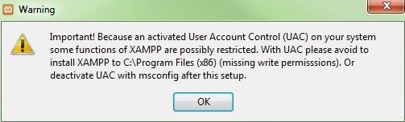
- 5. urratsa: instalazio-laguntzailea martxan jarri
Urrats horiek gainditu ondoren, XAMPP instalatzeko laguntzailearen hasierako pantaila agertuko da. Instalazioaren konfigurazioak doitzeko, egin klik Next frekuentzian.
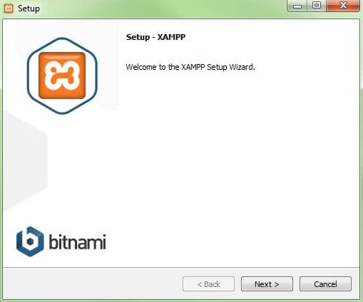
- 6. urratsa: softwarearen osagaiak hautatu
XAMPPren software-paketearen osagai isolatuak instalaziotik kanpo utz daitezke, «Select components, Components, Reguls» errubrikan. Proba lokaleko zerbitzari baterako konfigurazio estandarra gomendatzen da, eta horrekin instalatzen dira eskuragarri dauden osagai guztiak. Konfirmatu hautaketa Next etiketa sakatuz. "Select Components" elkarrizketa-koadroan, instalatuko diren osagaiak hauta edo deshauta daitezke.
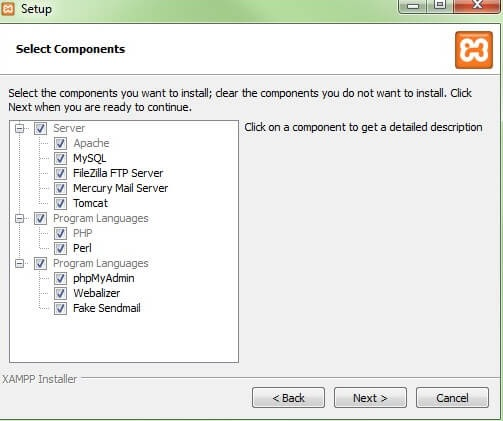
- 7. urratsa: Instalaziorako direktorioa hautatu
Urrats honetan paketea instalatuko den direktorioa aukeratzen da. Konfigurazio estandarra aukeratu bada, XAMPP izena duen karpeta bat sortuko da C:\delakoan.
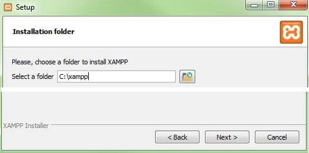
- 8. urratsa: Instalazio-prozesua hasi
Laguntzaileak hautatutako osagaiak atera eta aukeratutako direktorioan gordeko ditu, minutu batzuk iraun dezakeen prozesu batean. Instalazioaren aurrerabidea karga-barra berde gisa erakusten da. Ondoren, hautatutako software-elementuak deskonprimatzeko eta aurredoikuntzetan zehaztutako direktorioan instalatzeko instalazio-prozesua hasiko da.
- 9. urratsa: Firewall konfiguratu
Instalazio-prozesuan zehar, ohikoa da laguntzaileak Firewall-en blokeoaren berri ematea. Elkarrizketa-leihoan, Apache zerbitzaria sare pribatu batean edo lan-sare batean komunikatzeko laukitxoak markatu ditzakezu.
Gogoratu ez dela gomendatzen sare publiko batean erabiltzea.
- 10. urratsa: Instalazioa itxi
Osagai guztiak atera eta instalatu ondoren, morroia itxi dezakezu Finish) teklarekin. Kontrol-panelera berehala sartzeko, egin nahi dugun galdetzen duen laukia markatu besterik ez dugu egin behar.
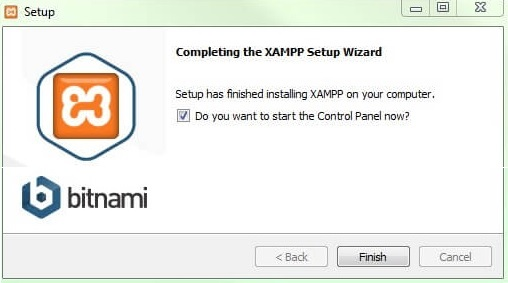
XAMPPen kontrol-panela
Kontrol-panelaren erabiltzaile-interfaze garbian ekintza guztiak protokolatzen dira eta moduluak banaka aktibatu edo desaktibatu daitezke klik soil batekin. Gainera, hainbat erabilera daude, hala nola:
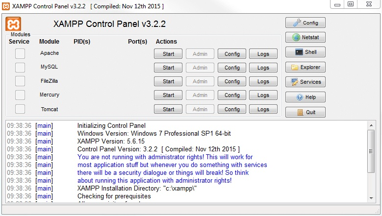
- Config: XAMPP eta beste osagai isolatu batzuk konfiguratzeko.
- Netstat: tokiko ordenagailuan funtzionatzen ari diren prozesu guztiak erakusten ditu
- Shell: UNIX komandoen leiho bat jaurtitzen du
- Explorer: ireki XAMPP karpeta Windowsen arakatzailean
- Zerbitzuak: martxan dauden zerbitzu guztiak erakusten ditu
- Help: erabiltzaileen foroetarako estekak ditu
- Quit: kontrol-paneletik irteteko erabiltzen da
Kontrol-panelean, erabiltzaileak bereizita has edo buka ditzake moduluak.
Nola jarri martxan moduluak
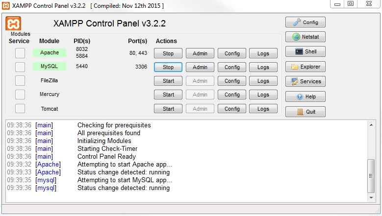
Goiko aldean, XAMPP moduluak banaka hasi edo eten daitezke, Start, Stop eta Actions komandoen bidez. Aktibatu diren moduluak berdez markatuta agertzen dira.
Akats batengatik horietako bat hasterik ez badago, gorriz markatuta agertuko da. Beheko aldean protokoloan jasotako errore-jakinarazpenek errorearen kausak aurkitzen laguntzen dute.
Doitu XAMPP
Apacheren erabileran maiz gertatzen diren akatsen kausa bat blokeatutako ataka bat da. XAMPP konfigurazio estandarrak 80 portu nagusia eta SSL 443 portua esleitzen dizkio web zerbitzariari, baina beste programa batzuek blokeatzen dituzte. Aurreko irudian Skype berehalako mezularitza programarekin gatazka bat agertzen da. Programa hori 80 eta 443 portuak erabiltzen ari da, eta, beraz, zerbitzaria ezin da hasi. Hiru irtenbide posible daude:
- a. Aldatu portua Skypen: horretarako, Skype irekitzen da, eta, bertan, Tresna elektronikoak > Aukerak > Aurreratua> Konexio informatikoa laukitxoa desmarkatzen da. Lauki horretan, Erabili 80 eta 443 atakak sarrerako konexio elektrikoetarako.
- b. Aldatu ateen konfigurazioak Apache-n: egin klik Apache moduluaren konfigurazioan (Config) eta ireki PD.CONF eta PD-SSL.CONF. fitxategiak. Pd.conf-en 80. portua erabili nahi duzun portuarekin aldatzen da, eta gauza bera egiten da pd-ssl.conf-en, 443 portuarekin. Gorde artxiboak. Eskuinaldean dagoen Config «Doitu portuak» teklan, egindako aldaketak konf fitxategietan sartu ahal izateko.
- c. Skype amaitu: Skyperekin gatazkarik ez izateko metodorik errazena da itxi eta berriro hastea, Apache zerbitzaria martxan dagoenean
Errore-jakinarazpenak gorriz agertzen dira Kontrol Panelean, gatazka konpontzeko argibideekin
Moduluak nola administratu
Modulu bakoitzerako "Admin" funtzio bat dago.
- Apache zerbitzariaren "Admin" tekla sakatzean, zerbitzariaren web-helbidera sartuko zara, ekipoaren nabigatzaile estandarraren bidez. XAMPPren host lokaleko orri nagusira bideratuko zaituzte, hau da, makina lokalaren domeinura. Dashboardak informazio erabilgarria duten webguneetarako esteka ugari ditu, baita open source BitNami proiekturako ere. Proiektu horrek doako hainbat aplikazio eskaintzen ditu XAMPPrentzat, hala nola WordPress edo beste CMS batzuk. Orri nagusi honetan sartzeko, sartu localhost/dashboard/helbidea.
- Datu-baseko "Admin" tekla sakatuz gero, phpMyAdmin irekiko da. Bertan, XAMPPrekin probatu nahi den web proiektuaren datu-baseak administratu daitezke. MySQL datu-baserako administrazio-interfazera ere sar gaitezke localhost/phpmyadmin/helbidean. Datu-baseak phpMyAdmin-en kudeatzen dira, Datu-basea moduluko Admin Admin botoian eskuragarri.
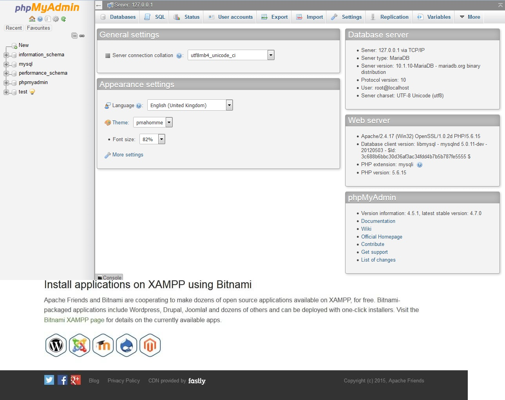
XAMPP zerbitzariaren instalazioa egiaztatu
Htdocs karpeta
Instalazioaren jarraibideak hitzez hitz bete badituzu, zure zerbitzari lokala Xampp helbide honetan egongo da: C:\Xampp instalatuta egongo da.
- Sartu hemen: Tokiko diskoa (C:) > Xampp.
- Bilatu htdocs karpeta.
- Ireki htdocs karpeta. Bertan gordeko ditugu gure garapen guztiak. Izan ere, berau dugu zerbitzari lokalaren erroko karpeta.
- Kokatu htdocs karpetaren barruan, gorago sortu dugun eta idazmahaian gorde dugun webgintza karpeta index.html fitxategiarekin.
- Orain ireki nabigatzailea eta helbide-barran idatzi localhost/webgintza sartu eta lehen ikusi dugun irudi berbera agertu beharko luke pantailan. Oraingoan helbide-barran localhost/webgintza agertzen zaigu, zerbitzaritik bidalitako informazioa denaren seinale. Aurreko adibidean egin dugunarekin alderatzen baduzu, hura idazmahaitik (desktop) jasotakoa dela ikusiko duzu.
Kode-editorea funtsezko tresna da softwarea edo programazioa garatzen duen edonorentzat. Programa baten iturburu-kodea idazteko, editatzeko eta antolatzeko aukera ematen duen programa da, sintaxia eta kodea idaztea eta ulertzea errazten duten beste funtzionalitate batzuk nabarmenduta.
Hainbat kode-editore mota daude, testu-editore soiletatik hasi eta garapen-ingurune integratuetaraino Integrated Developmen Environmen (IDE, ingelesezko sigletan). Kode editoreen adibide ezagunak dira Visual Studio Code, Sublime Text eta Atom.
Kode-editorea iturburu-kodea hainbat programazio-lengoaiatan idazteko erabiltzen da, hala nola Java, Python, HTML, CSS, JavaScript, beste askoren artean. Kodea idazteko eta editatzeko aukera emateaz gain, hainbat ezaugarri ere eskaintzen ditu, hala nola kodearen autoosaketa, kodean nabigatzea, erroreak araztea eta bertsioak kontrolatzeko tresnekin integratzea.
Laburbilduz kode-editorea funtsezko tresna da programatzaileentzat, programen iturburu-kodea eraginkortasunez eta modu produktiboan idazteko, editatzeko eta antolatzeko aukera ematen baitie. Gai honi buruz gehiago ikasi nahi baduzu, iturri fidagarriak kontsultatzea gomendatzen dizut, hala nola programazioan espezializatutako guneen kode-editoreen eta lineako tutorialen dokumentazio ofiziala.
GARRANTZITSUA: Badira web-garatzaileon lana erraztu dezaketen kode-editoreak. Editore horiek kolore desberdinak erabiliz hitzak nabarmentzen dituzte kodearen zati bakoitza identifikatzen laguntzeko, proiektuaren fitxategiak zerrendatzen dituzte alboko panel batean, fitxategi askorekin batera lan egin ahal izateko, luzapenak eskaintzen dituzte euren ahalmenak handitzeko eta horrelako hamaika aukera ematen digute. Makina bat editore daude, doakoak eta ordaintzekoak. Horra hor horietako batzuk.
- Visual Studio Code
- Atom
- Brackets
- Sublime Text
- WebStorm
- Notepad++
- CoffeeCup HTML Editor
- TextMate
Guk Visual Studio Code erabiliko dugu.
Visual Studio Code
Visual Studio Code, VSCode izenez ere ezagutzen duguna, kode-editore bat da, doakoa, kode irekikoa eta plataforma anitzekoa. Garatzaileen artean erruz zabaldu da tresna arin eta praktikoa delako. VSCode gai da imajina dezakegun edozein programazio-hizkuntzatara egokitzeko.
Ikus dezagun zertan lagun gaitzakeen VSCodek.
- Iturburu-kodea editatzen eta garatzen, karaktere joko zuzenekin, sintaxia nabarmenduz edota kode zatiak bere kabuz osatuz
- Proiektuen lan-karpetak eta fitxategiak kudeatzen, tresna erabilerrazak eskainiz.
- Bertsioak kontrolatzen, Git-ekin integratuta eta haren tresnak eskura jarriz VSCode-tik irten gabe.
- Lengoaia asko eskaintzen, garatzaile komunitateari esker editoretik irten gabe instala ditzakegunak.
- Live Share-rekin lan egiten, lankideekin editatuz eta araztuz, ikaskideekin txateatuz, terminalak eta zerbitzariak partekatuz, iruzkinak ikusiz...
- Bezeroaren aldea garatzen, VS Code egokitua dagoelako erabili ohi diren HTML, CSS eta Javascript bezalako lengoaietara.
- Zerbitzariaren aldea garatzen, hamaika lengoaiarekin jarduteko aukera eskaintzen baitu: PHP, Python, Go, Java, NodeJS, Ruby eta beste askorekin.
- Aplikazioak eta script-ak arazten, Markdown dokumentuak idazten eta editatzen, Zereginak eta lan-fluxuak automatizatzen...
Visual Studio Code Windows sistema eragilean nola instalatu
Visual Studio Code lortu
Visual Studio Code deskargatzeko jo haren webgune ofizialera: https://code.visualstudio.com/ .
Azken bertsio egonkorra deskarga daiteke (ezkerrean dagoen botoi urdin handiaren bidez) edo deskargen orrira sar daiteke (goian eskuinaldean dagoen botoi urdin txikienaren bidez):
Deskargen orrialdetik hainbat sistema eragiletarako bertsioak deskarga daitezke (32/64 bits, Windows/GNU/Linux/Mac). Windowsen, gainera, System installer bertsioak daude eskuragarri, Programa-fitxategien karpetan instalatzen direnak, eta User installer bertsioak, erabiltzaile-karpetan instalatzen direnak. 2018ko udatik, Microsoftek User installer bertsioa gomendatzen du.
Windows deskarga lotura: Visual Studio Code (64 bits, gomendatua)
Oharra: Erabilitako irudiak Visual Studio Code 1.82 (User installer) enpresarenak dira, 64 bitekoak. Ondorengo bertsioak desberdinak izan daitezke.
Egin klik bikoitza Visual Studio Code instalatzailearen gainean instalazio-laguntzailea martxan jartzeko eta aukera instalaziorako hizkuntza.

- Lehenengo pantailak instalazioarekin jarraitzeko Visual Studio Code lizentzia onartzea eskatzen du:
- Bigarren pantailak non instalatu hautatzeko aukera ematen du (User installer bertsioa denez, instalazio-direktorioa erabiltzailearen karpetan dago, ez programa-fitxategietan):
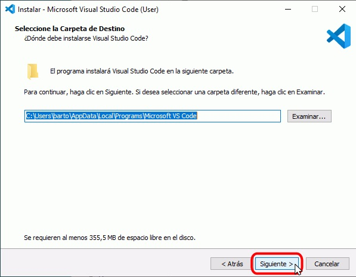
- Hirugarren pantailak hasierako menuko karpetaren izena aukeratzeko aukera ematen du:
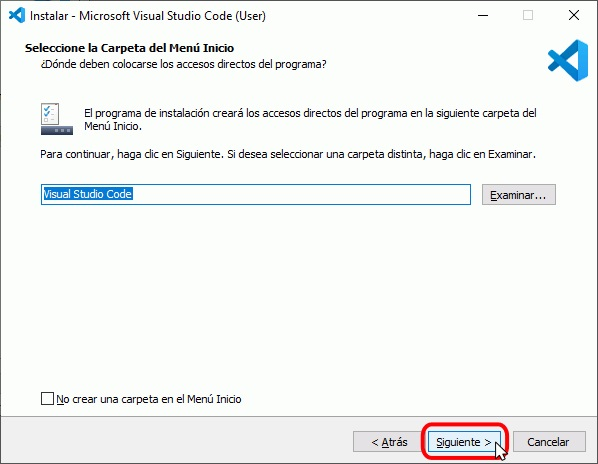
- Laugarren pantailak aukera ematen du instalazioaren ondoren ataza gehigarri batzuk aukeratzeko. Pertsonalki, "Gehitu ekintza..." laukitxoak markatzea gomendatzen dut:
- Azkenik, aurreko pantailetan aukeratutako aukerak agertuko dira. Instalazioa hasteko, sakatu Instalatu.
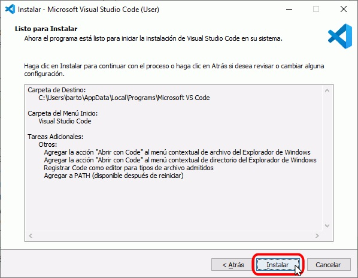
- Ondoren, Visual Studio Code instalatuko da.
- Instalazioa osatu ondoren, amaierako pantaila agertuko da. Visual Studio Code duen Git erabili behar baduzu, desmarkatu "Exekutatu Visual Studio Code" laukitxoa, egin klik Amaitu botoian.
Lehen exekuzioa
Instalazioaren ondoren Visual Studio Code irekitzen den lehen aldian, programari ongietorria emateko orrialde bat erakusten da:
Visual Studio Code eguneratzea
Visual Studio Code automatikoki eguneratzen da bertsio berri bat argitaratzen den bakoitzean. Visual Studio Code-k ohar bat erakusten du eguneratzea deskargatu denean eta eguneratzea berehala aplika dezakegu, hurrengo pantaila-harrapaketetan erakusten den bezala. Nolanahi ere, eguneraketa aplikatzea eskatu edo ez, Visual Studio Code ixten badugu, eguneraketa berriro irekitzean aplikatuko da.
- Eguneratze bat dagoenean, Visual Studio Code sistemak zenbaki bat erakusten du beheko ezkerreko gurpil horzdunaren ikonoan. Egin klik gurpilaren gainean eta aukeratu "Restart to Update" (Berrabiarazi eguneratzeko) aukera:
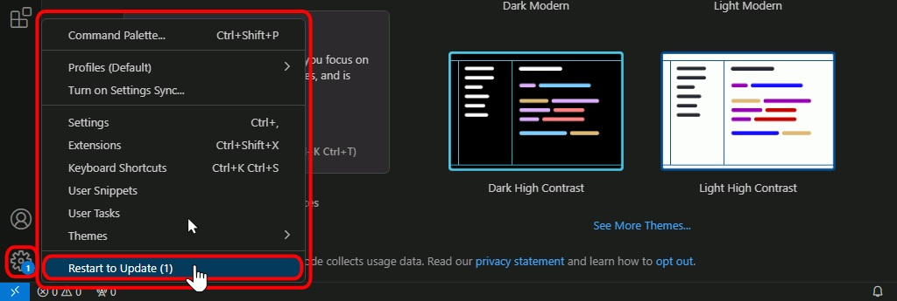
- Visual Studio Codek eguneraketa instalatuko du:
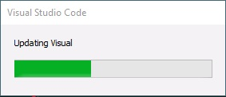
- Berrabiaraztean, erlaitz berri batean agertuko dira instalatutako bertsioaren notak, eta gurpil horzdunaren ikonoak ez du zenbakia erakutsiko:
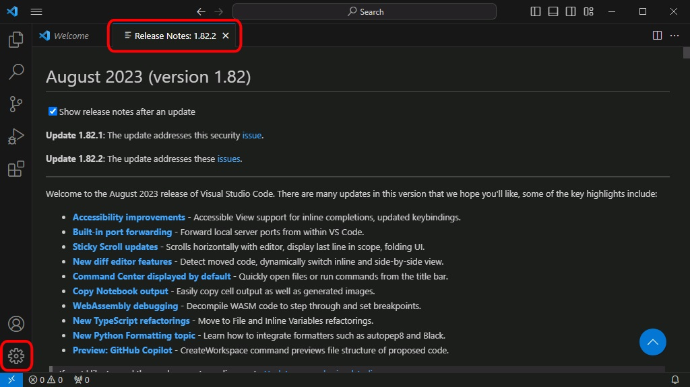
Zer da bertsioen kontrola?
Bertsioak kontrolatzeko sistema batek kode nagusiaren osotasuna bermatzen du edozein aldaketa mota egin behar denean. Programatzaile batek proiektu bat sortuta badu eta edozein zatitan aldatu behar badu, aplikazioak behar bezala funtzionatzeari uzteko arriskua du.
Milaka edo milioika kode lerro dituen software batean arazoa aurkitzea benetako buruko mina izan daiteke. Bertsioak kontrolatuta, fitxategi baten kodean egindako aldaketa guztiak bistara daitezke.
Garatzaile batek kodearen zati bat aldatu behar duenean, ez du kodearen jatorrizko masterraren biltegian egiten, baizik eta adarkatze bat sortzen du. Bidebanatzean aldaketak amaitzen dituenean eta dena zuzen dagoela egiaztatzen denean, proiektu nagusiarekin bat egin daiteke. Hori guztia erregistratuta geratzen da bertsioen kontrolean, eta proiektua bat egitean kodearen beste zati batekin gatazka sortzen bada, atzera egin daiteke.
Orain arte, bertsioak kontrolatzeko sistema da munduko software-garatzaile guztiek gehien erabiltzen dutena, ez dago proiektuak kudeatzeko modu hoberik
Gomendatzen dugunak GIT du izena. Doako paketea da, ordenagailu pertsonaletarako eta Apple ordenagailuetarako eskuragarri dagoena.
GIT
Zer da Git?
Git Linus Torvaldsek (Linuxena) garatutako bertsioak kontrolatzeko sistema bat da, eta bere ezaugarri nagusia sistema banatu bat dela da. Bertsioen kontrol zentralizatuarekiko aldea da gordailura sarbidea duen edonork kodearen zatien banaketak eta fusioak egin ahal izango dituela, iturburu-kode nagusi bat aldatu beharrean. Proiektuak ere hainbat adarretan bana daitezke, proiektuaren kudeaketa globala askoz argiagoa izan dadin proiektuaren kolaboratzaile guztientzat.
Adibidez, garatzaile bat webgunearen diseinu berri bat lantzen ari daiteke, eta beste batek menu batean dagoen bug bat kudeatzen du. Biek dakite bestea zer egiten ari den une oro, eta menuaren bug-a ebatzi ondoren soilik fusionatu ahal izango da diseinu berria proiektu nagusira.
Bertsioen kudeatzaile on orok bezala, Git atzera itzul daiteke proiektu baten zati guztiak fusionatzean, proiektu horrek arazo bat badu. Ikusiko duzunez, GitHub eta Git ia berdinak dira, baina online eta erabiltzaile-interfaze askoz sinpleago batekin, Git, komando kontsola bakarra erabiltzen baitu.
GitHub mota guztietako garatzaileek gehien erabiltzen duten plataformetako bat bihurtu da, kodea kudeatu, eguneratzeak egin eta beste programatzaile batzuekin lankidetzan aritu nahi baitute. Programatzailea ez izan arren, Microsoftek 2018an GitHub erosi zuen diru kopuru handi baten truke, eta albistea komunikabide askotan agertu zen. Hemen azalduko dizugu zer den GitHub eta zertarako balio duen zehazki. Baliteke garatzaile eskarmentuduna ez izan arren, erabilgarritasuna aurkitzea.
GitHub
Zer da GitHub?
GitHub bertsioak kontrolatzeko plataforma bat da, eta online sartzen da bertara; hau da, ez duzu zure ordenagailuan instalatzen, baizik eta Internetetik sartzen da. GitHub-i esker, edozein garatzailek bere proiektua biltegira igo eta proiektuan egindako aldaketa guztien ibilbide-orria izan dezake.
Gainera, kolaboratiboa da. GitHubetik hainbat garatzailek proiektu bera kudeatu eta lagundu dezakete, une bakoitzean aldaketak nork egiten dituen eta proiektuaren zein zatitan egin dituen ikusiz.
GitHub kode irekiko bertsioak kontrolatzeko munduan gehien erabiltzen den sistema da. 90 milioi garatzailek baino gehiagok erabiltzen dute kodea kudeatzeko eta beste garatzaile batzuekin elkarlanean aritzeko. GitHub doan da, nahiz eta enpresei eta erakundeei zuzendutako ordainketa-planak dituen, baina jarraitu aurretik, kontzeptu batzuk argituko ditugu, hala nola zer den bertsioen kontrola eta zer den Git.
Nola funtzionatzen du GitHub-ek?
Ezer baino lehen, jakin behar duzu edonork eman dezakeela alta GitHuben. Horretarako aski da GitHub-en gune ofizialera jotzea, zure posta elektronikoaren helbidea sartzea, 'Sing up for GitHub' dioen botoian klik egitea eta irekiko den pantailatxoan pasahitz bat idaztea.
Alta emanda izatea derrigorrezkoa da GitHub-en gordailu bat eratzeko eta bertara fitxategiren bat igotzeko. Hona hemen esteka bat GitHub-en gunera jotzeko eta alta emateko: GitHub.
 GitHub(1): Alta GitHub-en.
GitHub(1): Alta GitHub-en.
Hori bai, GitHuben dagoen aplikazioren bat deskargatu nahi baduzu, ez duzu kontu bat sortu beharrik ere, sarbidea publikoa baita, garatzaileak hala konfiguratu badu. Proiektu bat bilatu, egin diren aldaketa guztiak ikusi eta deskarga dezakezu, osorik edo zati bat, zure ordenagailuan aldatzeko edo erabiltzeko.
Garatzaile batzuek GitHub-era igotzen dituzte beren proiektuak, erabiltzaileek deskarga dezaten, WordPress-eko plugin-gordailu bat bezala, baina edozein motatako softwarearekin.
Nola deskargatu proiektu bat GitHuben
Ikus dezagun nola deskargatzen den proiektu bat GitHub-etik, adibide gisa. Egin behar dugun lehenengo gauza GitHub-en orri nagusira sartzea da.
Pantailaren goiko aldean, eskuinean bilatzaile bat ikusiko duzu Search or jump to... ) Hori, oro har, ez duzu erabiliko, garatzaileak zuzeneko URLa emango baitizu, baina probatzen ari garenez, horrela egingo dugu.
Bilatzailearen gainea klik egin eta leihatila bat irekiko da bilatu nahi duzun proiektuaren izena jatzeko. Nire proiektuetako bat bilatuko dut: erlatiboa.
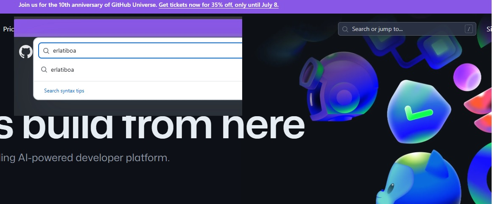
GitHub(2): Gordailu bila GitHub-en
GitHub-ek berehala aurkituko du gordailua.
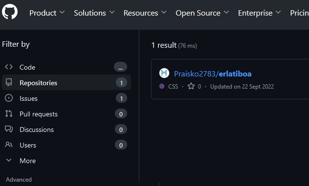
GitHub(3): Gordailua eskura GitHub-en
Egin ezazu froga beste izen bat jarriz bilatzailean 'Helo World' esaterako. 40 mila baino gehiago agertuko zaizkizu. Horietako bat aukeratu eta proiektu horrek dituen fitxategi guztiak agertuko zaizkizu.
Gure kasuan gure proiektua aukeratuko dugu: erlatiboa. Eta proiektuaren fitxategi eta karpeta guztiak aterako dira. Euren gainean klik eginda ireki egin ditzakezu eta kodea ikusi.
Sartu horietako edozeinetan, eta proiektuaren fitxategiak ikusiko dituzu. Gure kasuan, fitxategi bakarra aurkituko dugu, eta klik eginez gero, pantailan ikusiko duzu kodea. Kode hori kopiatu egin dezakezu nahi baduzu eta kontu bat baduzu eta jabeak horretarako aukera ematen badu, baita bidebanatze bat sortu ere (branch) editatzeko eta gero aldaketak masterrera bidaltzeko, onartuz gero.
 GitHub(4): Gordailuko fitxategi eta karpetak GitHub-en
GitHub(4): Gordailuko fitxategi eta karpetak GitHub-en
Proiektua tokian-tokian aldatzeko edo erabiltzeko deskargatu nahi baduzu, Code botoian sartu eta Download ZIPerako aukera bat ikusiko duzu. Horrek proiektuaren fitxategi guztiak deskargatuko ditu fitxategi konprimatu batean.
 GitHub(5): Gordailuaren deskarga GitHub-etik
GitHub(5): Gordailuaren deskarga GitHub-etik
Hau oso oinarrizko adibidea da, baina GitHub egitura ez da asko aldatzen beste proiektu serioagoak. Adibidez, deskargatzeko aplikazio bat bada, instalatzailearekin esteka bat aurki dezakezu.
Proiektuan lagundu duten erabiltzaileak eta erabili diren programazio-lengoaiak ere aurki ditzakezu. Ikusiko duzunez, dena oso irekia eta gardena da GitHuben, baina errepositorio pribatuak ere sor daitezke, beharrezkoa bada.
Nola sortu gordailu bat GitHuben?
Zure gordailua sortu nahi baduzu, plataforman alta eman behar duzu. Egiaztatu behar duzun posta-kontu bat eskatuko dizute (ikus goragoko irudia -GitHub(1): Alta GitHub-en.-). Doako kontuarekin behar dituzun gordailu guztiak sortu ahal izango dituzu, publikoak zein pribatuak izan, baina muga batzuk izango dituzu, hala nola 500 MBko espazioa zure biltegiak gordetzeko.
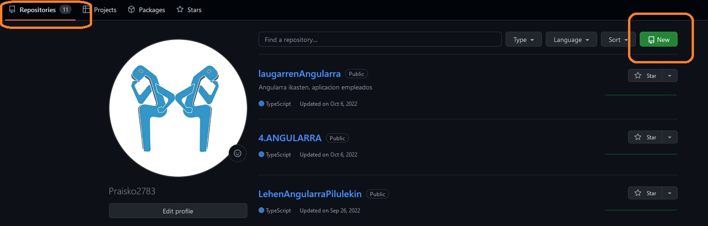
GitHub(6): Gordailu bat nola sortu GitHub-en
Gordailu bat sortzeko, pantaila nagusian hori egin dezakezula ikusiko duzu, eta publikoa edo pribatua izatea nahi duzun aukeratu. Sortu nahi duzun biltegiaren izena jarri besterik ez duzu egin behar.
 GitHub(7): Gordailua sortzeko bete beharrekoak GitHub-en
GitHub(7): Gordailua sortzeko bete beharrekoak GitHub-en
Eta kito, sortu duzu GitHub gordailua, bere izenarekin (webgunegintza), deskribapenarekin (Webguneak nola egiten...) eta publikoa dela esan diozu.
Orain, dituzun fitxategiak igo ditzakezu, edo inportatu, beste plataforma batean baduzu. SSH bidez ere konekta dezakezu, nahi baduzu. Hemendik aurrera, erabiltzaileak gehitu ditzakezu proiektuan, banaketak sortu, egiten diren aldaketen eskaerei erantzun eta GitHub-ek ematen dizun guztia.
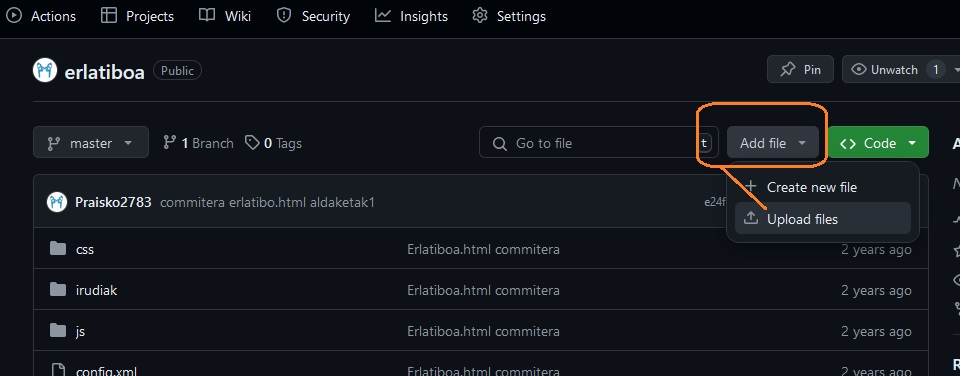
GitHub(8): Gordailura fitxategiak igotzeko modua GitHub-en
Ondorioak
GitHub ondo dabil. Git bertsioak kontrolatzeko sistema bat da, eta egungo garatzaileek behar dituzten behar guztiak edo gehienak jasotzen ditu online.
Garatzailea ez bazara, ez du zentzu handirik gordailu bat sortzeak, baina erabiltzaile batzuek erabilgarritasun pertsonalak ematen dizkiote, hala nola WordPress-en egiten dituzten aldaketak kontrolatzea edo dokumentuak idaztea eta aldaketen kontrola izatea. Nolanahi ere, GitHub plataforma segurua da, aukera onak ditu eta milioika programatzaileren beharrak asetzen dituen doako plana du.